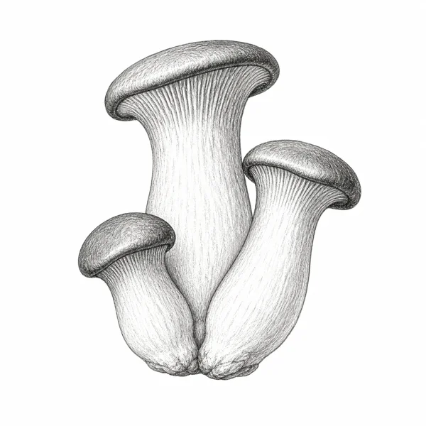
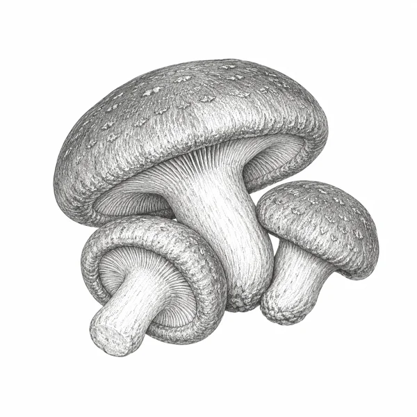
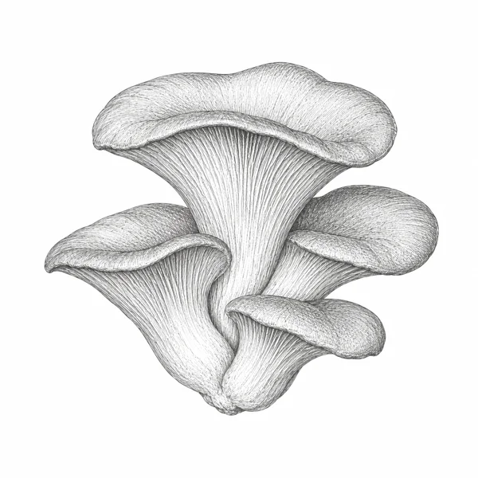
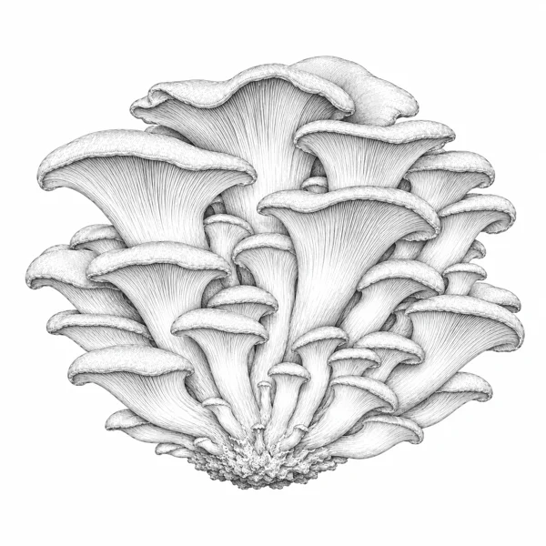

N° 01

Kräuterseitling
Pleurotus eryngii
Festes, weißes Fleisch mit leichter Süße. Lässt sich wie Fleisch braten und behält dabei seine Form. Unsere erste Sorte — und ein Pilz, der die Mitte des Tellers verdient.
Auf unserem Hof in Berghaupten ziehen wir Edelpilze in handgeernteten Substraten aus regionalem Bio-Stroh und Buchenholz auf. Bioland-zertifiziert. Ohne Eile. Mit dem Respekt, den ein lebendiger Organismus verdient.

Festes, weißes Fleisch mit leichter Süße. Lässt sich wie Fleisch braten und behält dabei seine Form. Unsere erste Sorte — und ein Pilz, der die Mitte des Tellers verdient.

Würzig-umami und fleischig in der Textur. Wird langsam auf gepressten Hartholzblöcken reifen und dabei eine außergewöhnliche Tiefe im Geschmack entwickeln.

Mild-nussig mit zarter Bissfestigkeit. Wächst in eleganten Trauben auf Buchensubstrat. Gebraten oder in cremigen Saucen gleichermaßen überzeugend.

Leuchtend gelb und zitrusartig im Aroma. Wird ein optisches und kulinarisches Highlight — kurz angebraten in feinen Pastagerichten unschlagbar.
Wir glauben, dass guter Geschmack mit Geduld beginnt. Unsere Pilze wachsen ohne Wachstumsbeschleuniger, ohne Kunstlicht-Tricksereien und ohne Eile. Was bei industriellen Betrieben in zwei Wochen gepresst wird, lassen wir reifen — bis Aroma, Konsistenz und Form wirklich stimmen.
Unser Substrat besteht aus Bio-Stroh und Buchenholz aus dem Schwarzwald. Nach der Ernte geht es zurück auf die Felder als Humus. Ein geschlossener Kreislauf, wie er sein soll.
Wir pasteurisieren regionales Bio-Stroh und Buchenholz. Ohne Chemie, nur mit Wasserdampf — so bleibt das Substrat lebendig.
Eigenes Pilzmyzel wird in das vorbereitete Substrat eingebracht. Jede Sorte erhält ihr passendes Nährmedium.
In klimatisierten Reifräumen durchwachsen die Pilze ihr Substrat. Temperatur, Licht und Luftfeuchte werden täglich kontrolliert.
Geerntet wird ausschließlich von Hand, im richtigen Reifegrad. Verpackt am selben Tag, im Hofladen am nächsten.
Frische Edelpilze, Trockenpilze, Pilzsalz und unsere hausgemachten Aufstriche bekommen Sie direkt bei uns am Hof. Wir freuen uns auf Ihren Besuch — gerne mit Korb und Zeit für ein Gespräch.